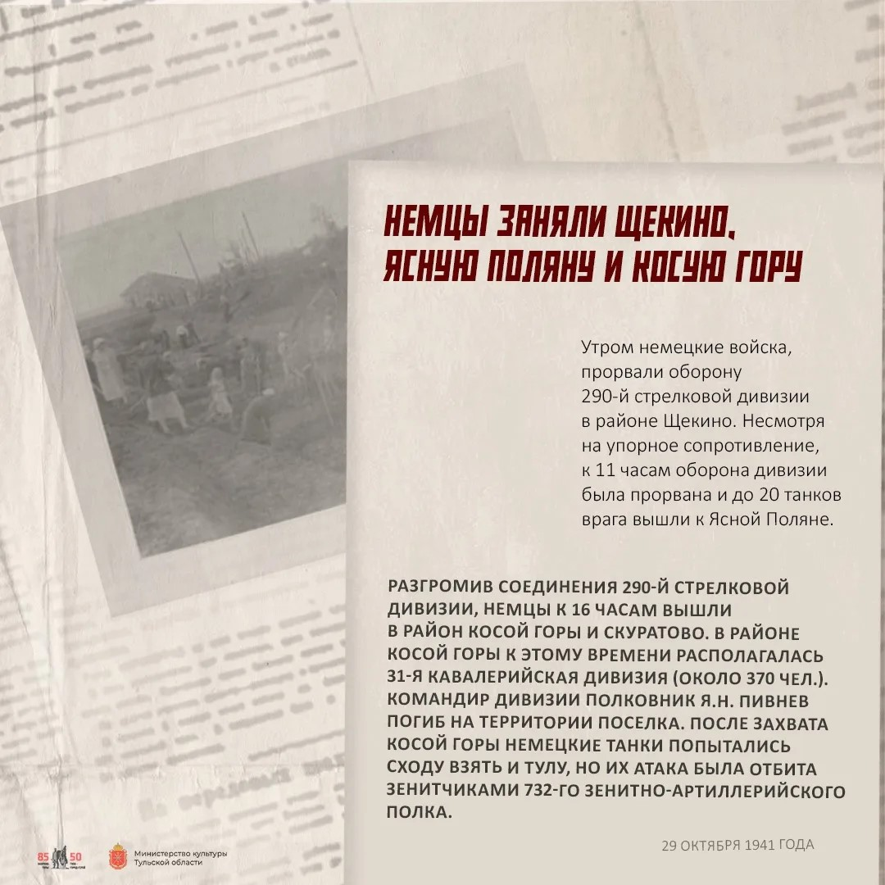
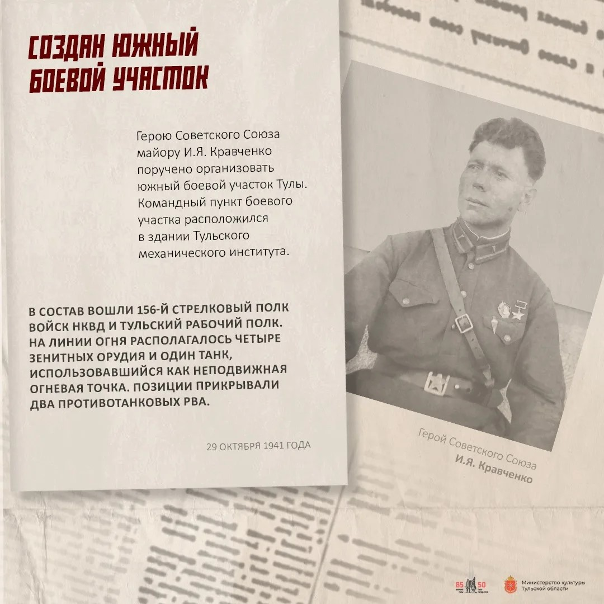
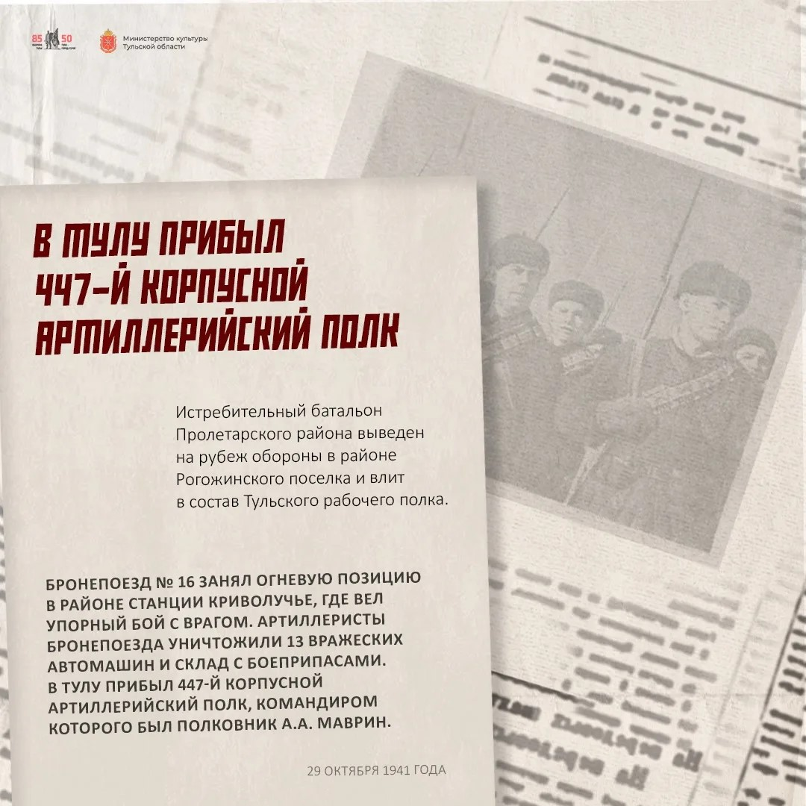
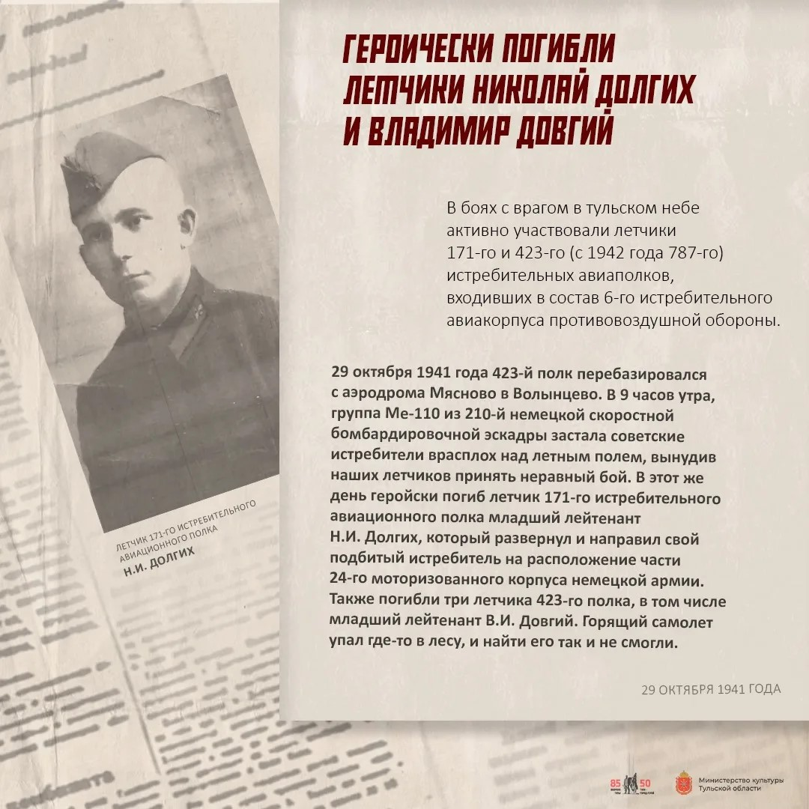
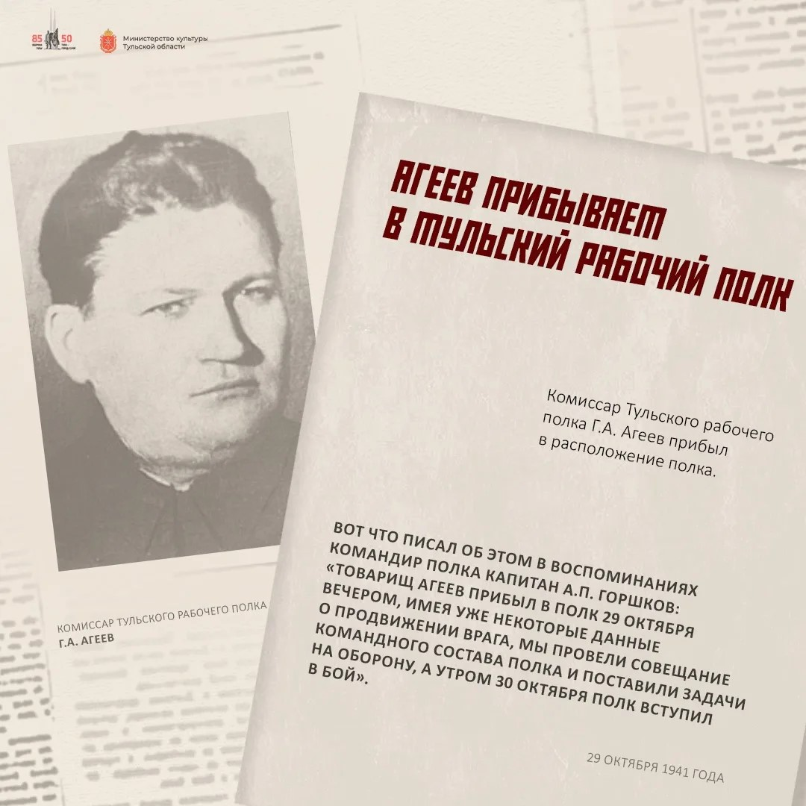
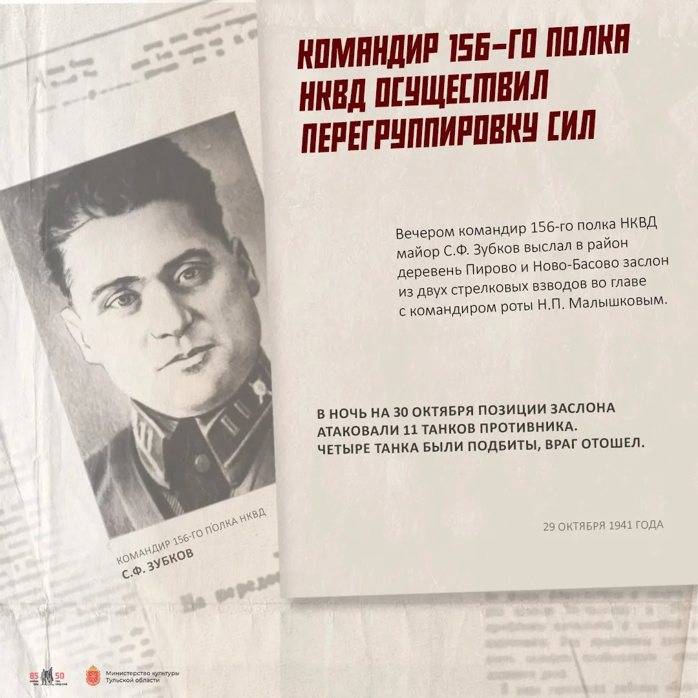

Как развивались события в те страшные дни 1941 года. Нажмите на событие, чтобы узнать подробности
В этот день немецкие войска подошли вплотную к городу. Тульский городской комитет обороны принял решение о создании Тульского рабочего полка (решение принято 23 октября). В него вступили более тысячи добровольцев: рабочие оружейного завода, шахтеры, студенты и школьники старших классов. Город готовился стоять насмерть.
В этот день Вале исполнилось 12 лет. Он ходил в разведку и принес важные сведения. Узнав, что пулеметчику не хватает патронов, он вызвался доставить их. Дважды он успешно доползал до огневой точки, а на третий раз, когда он поднялся во весь рост, его сразила пуля немецкого снайпера. Он погиб, но помог удержать позиции.
Утром немецкие войска прорвали оборону 290-й стрелковой дивизии в районе Щекино (город был оставлен 28 октября). Несмотря на упорное сопротивление, к 11 часам оборона дивизии была прорвана, и до 20 танков врага вышли к Ясной Поляне. Разгромив соединения 290-й стрелковой дивизии, немцы к 16 часам вышли в район Косой Горы и Скуратово. После захвата Косой Горы немецкие танки попытались сходу взять и Тулу, но их атака была отбита зенитчиками 732-го зенитно-артиллерийского полка.

Герою Советского Союза майору И.Я. Кравченко поручено организовать южный боевой участок Тулы. Командный пункт боевого участка расположился в здании Тульского механического института. В состав вошли 156-й стрелковый полк войск НКВД и Тульский рабочий полк. На линии огня располагалось четыре зенитных орудия и один танк, использовавшийся как неподвижная огневая точка. Позиции прикрывали два противотанковых рва.

29 октября 1941 года полк прибыл в Тулу и был размещён на северной окраине города в Кировском посёлке. Командиром полка был полковник А.А. Маврин. Истребительный батальон Пролетарского района был выведен на рубеж обороны в районе Рогожинского поселка и влит в состав Тульского рабочего полка. Бронепоезд № 16 занял огневую позицию в районе станции Криволучье, где вел упорный бой с врагом.

В боях с врагом в тульском небе активно участвовали летчики 171-го и 423-го истребительных авиаполков. 29 октября 1941 года 423-й полк перебазировался с аэродрома Мясново в Волынцево. В 9 часов утра группа Ме-110 застала советские истребители врасплох над летным полем, вынудив наших летчиков принять неравный бой. В этот же день героически погиб летчик 171-го полка младший лейтенант Н.И. Долгих, который направил свой подбитый истребитель на расположение части 24-го моторизованного корпуса немецкой армии. Также погибли три летчика 423-го полка, в том числе младший лейтенант В.И. Довгий.

Комиссар Тульского рабочего полка Г.А. Агеев прибыл в расположение полка. Вот что писал об этом в воспоминаниях командир полка капитан А.П. Горшков: «Товарищ Агеев прибыл в полк 29 октября вечером, имея уже некоторые данные о продвижении врага, мы провели совещание командного состава полка и поставили задачи на оборону, а утром 30 октября полк вступил в бой».

Вечером командир 156-го полка НКВД майор С.Ф. Зубков выслал в район деревень Пирово и Ново-Басово заслон из двух стрелковых взводов во главе с командиром роты Н.П. Малышевым. В ночь на 30 октября позиции заслона атаковали 11 танков противника. Четыре танка были подбиты, враг отошел.

Немецкие танки прорвались к Рогожинскому посёлку, создав угрозу прорыва к оружейному заводу. Тульский рабочий полк вступил в тяжелый бой. Когда под обстрелом оказался медпункт, комиссар Григорий Агеев лично возглавил спасение раненых. Он семь раз возвращался в пекло и выносил бойцов. На восьмой раз его настигла пулеметная очередь. В 1965 году ему посмертно присвоили звание Героя Советского Союза.
Тула выстояла. Город, который враг планировал захватить за 3 дня, держал оборону 45 дней. Именно под Тулой в декабре 1941 года началось знаменитое контрнаступление советских войск, которое стало переломным моментом в битве за Москву. За мужество и стойкость Туле в 1976 году было присвоено звание «Город-герой».